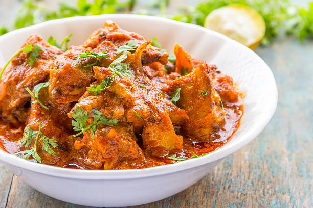
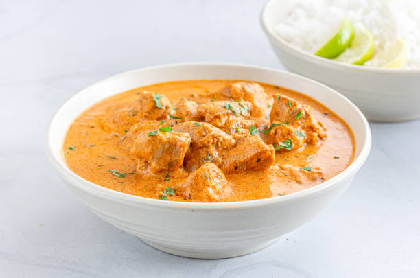
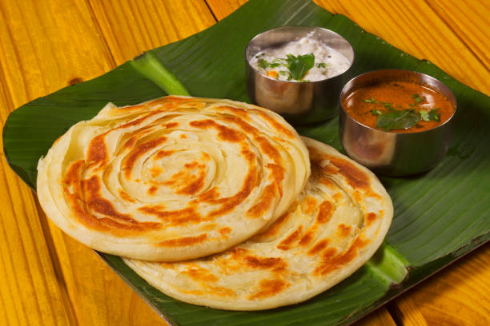
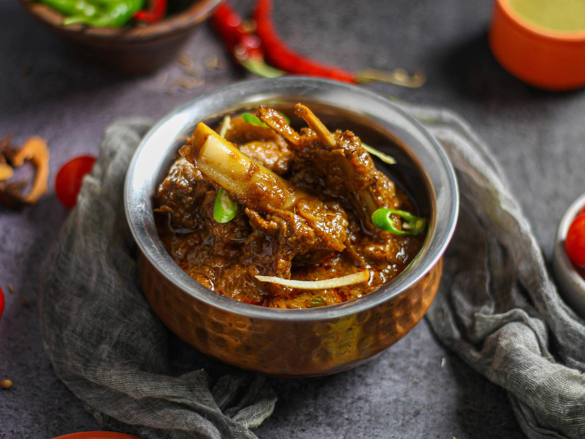

Menu

Butter Naan

Chicken gravy

Butter Chicken

Porotta

Mr. Naidu was known for always wearing a traditional turban (“thalappa” in Tamil). Over time, his customers began referring to him as “Thalappakatti Naidu” — meaning “the turban-wearing Naidu.” The nickname eventually became the identity of his restaurant and biriyani. Food that made it famous: The restaurant’s signature was its unique biriyani — made with Seeraga samba rice (Parakkum sittu) and tender Kannivadi goat meat cooked with a special blend of spices. This distinct flavor helped it grow beyond its humble beginnings. Growth and Legacy: What started as a small eatery soon became popular across the region for its consistent taste and quality. Over decades, Thalappakatti expanded into a well-known restaurant chain with many outlets across India and abroad.




Thalapakatti was founded in 1957 in Dindigul by Nagasamy Naidu, originally under the name Anandha Vilas Biriyani Hotel. Mr. Naidu was known for wearing a traditional Tamil turban called a “thalappa,” and customers affectionately referred to him as “Thalappakatti Naidu,” meaning “the man with the turban.” Over time, this nickname became the identity of the restaurant. The brand became famous for its distinctive Dindigul-style biryani, prepared using aromatic Seeraga Samba rice, tender Kannivadi goat meat, and a carefully crafted blend of spices cooked using traditional methods. What began as a small local eatery gradually grew into one of South India’s most celebrated biryani chains, expanding across India and internationally while maintaining its commitment to authentic taste, quality ingredients, and rich culinary heritage.